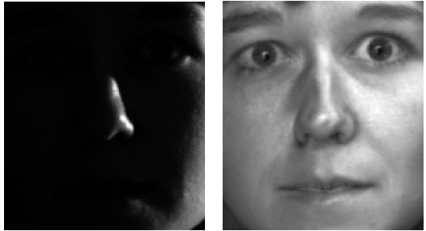
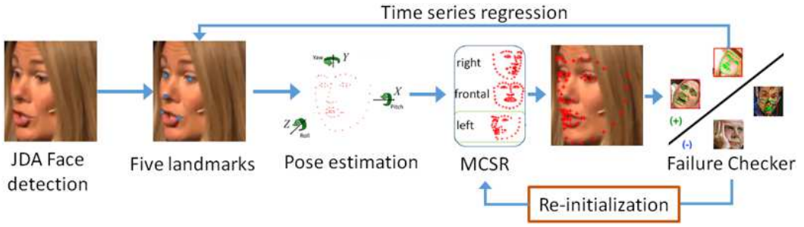
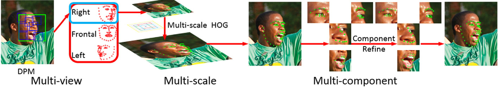

Selected Works [ DBLP ] [ Google Scholar ]

Informed Non-convex Robust Principal Component Analysis with Features
N. Xue, J. Deng, I. Panagakis and S. Zafeiriou
in AAAI (Oral), 2018.
[ Paper ]
Non-convex RPCA
N. Xue, J. Deng, I. Panagakis and S. Zafeiriou
in AAAI (Oral), 2018.
[ Paper ]

Joint multi-view face alignment in the wild
J. Deng, G. Trigeorgis, Y. Zhou, and S. Zafeiriou
in arxiv, 2017.
[ Paper ] [ 300VW Demo Results]
[ 2D Face Alignment Image Data]
Joint multi-view face alignment
J. Deng, G. Trigeorgis, Y. Zhou, and S. Zafeiriou
in arxiv, 2017.
[ Paper ] [ 300VW Demo Results]
[ 2D Face Alignment Image Data]

Marginal loss for deep face recognition
J. Deng, Y.Zhou and S. Zafeiriou
in CVPRW, 2017.
[ Paper ] [ Poster] [ NIST Report]
[ AgeDB_v1]
Simple setting of data, network and loss for deep face recognition
J. Deng, Y.Zhou and S. Zafeiriou
in CVPRW, 2017.
[ Paper ] [ Poster] [ NIST Report]
[ AgeDB_v1]

Facial shape tracking via spatio-temporal cascade shape regression
J. Yang, J. Deng, K. Zhang and Q. Liu
in ICCVW, 2015.
[ Paper ] [ Android Demo Binary Feature]
[ 300VW Frame-wise Results]
Winner of 300VW (Face detection, alignment and tracking from videos)
J. Yang, J. Deng, K. Zhang and Q. Liu
in ICCVW, 2015.
[ Paper ] [ Android Demo Binary Feature]
[ 300VW Frame-wise Results]

M3CSR: multi-view, multi-scale and multi-component cascade shape regression
J. Deng, J. Yang, Q. Liu and D. Tao
in Image Vision Computing, 2014.
[ Paper ] [ Android Demo HoG] [ Demo HoG vs Binary Feature]
Academic winner of 300W (Face detection and alignment from images)
J. Deng, J. Yang, Q. Liu and D. Tao
in Image Vision Computing, 2014.
[ Paper ] [ Android Demo HoG] [ Demo HoG vs Binary Feature]